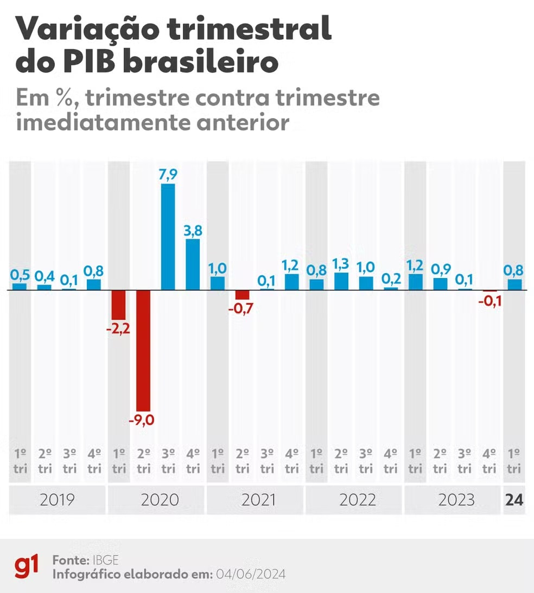

A economia dos Estados Unidos é a maior do mundo em PIB e desempenha um papel central nas finanças globais. Baseada no capitalismo, é diversificada, com setores fortes em tecnologia, serviços financeiros, manufatura e agricultura. O Vale do Silício é o epicentro da inovação tecnológica, abrigando grandes empresas como Apple e Google. O mercado de trabalho é dinâmico, variando de empregos manuais a especialistas em alta tecnologia. Grandes cidades como Nova York e Chicago são centros financeiros, enquanto o meio-oeste é reconhecido pela produção agrícola. Apesar de enfrentar desafios como desigualdade e concorrência, a economia americana se beneficia de um forte ecossistema de inovação e educação, mantendo sua liderança global.

